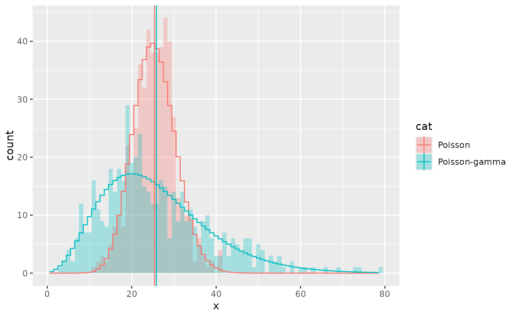
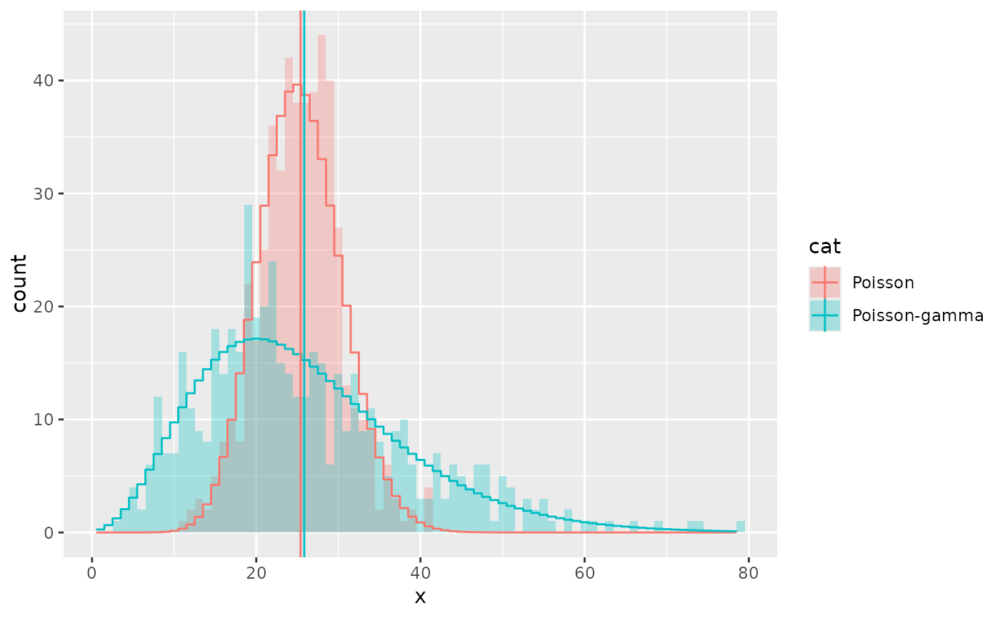

Estimates the parameters of a given distribution and evaluates the probability density function with these parameters. This can be useful for comparing histograms or kernel density estimates against a theoretical distribution.
Usage
stat_theodensity(
mapping = NULL,
data = NULL,
geom = "line",
position = "identity",
...,
distri = "norm",
n = 512,
fix.arg = NULL,
start.arg = NULL,
na.rm = TRUE,
show.legend = NA,
inherit.aes = TRUE
)Arguments
- mapping
Set of aesthetic mappings created by
aes(). If specified andinherit.aes = TRUE(the default), it is combined with the default mapping at the top level of the plot. You must supplymappingif there is no plot mapping.- data
The data to be displayed in this layer. There are three options:
If
NULL, the default, the data is inherited from the plot data as specified in the call toggplot().A
data.frame, or other object, will override the plot data. All objects will be fortified to produce a data frame. Seefortify()for which variables will be created.A
functionwill be called with a single argument, the plot data. The return value must be adata.frame, and will be used as the layer data. Afunctioncan be created from aformula(e.g.~ head(.x, 10)).- geom
Use to override the default geom for
stat_theodensity.- position
Position adjustment, either as a string naming the adjustment (e.g.
"jitter"to useposition_jitter), or the result of a call to a position adjustment function. Use the latter if you need to change the settings of the adjustment.- ...
Other arguments passed on to
layer(). These are often aesthetics, used to set an aesthetic to a fixed value, likecolour = "red"orsize = 3. They may also be parameters to the paired geom/stat.- distri
A
characterof length 1 naming a distribution without prefix. See details.- n
An
integerof length 1 with the number of equally spaced points at which the density function is evaluated. Ignored if distribution is discrete.- fix.arg
An optional named list giving values of fixed parameters of the named distribution. Parameters with fixed value are not estimated by maximum likelihood procedures.
- start.arg
A named list giving initial values of parameters for the named distribution. This argument may be omitted (default) for some distributions for which reasonable starting values are computed.
- na.rm
If
FALSE, the default, missing values are removed with a warning. IfTRUE, missing values are silently removed.- show.legend
logical. Should this layer be included in the legends?
NA, the default, includes if any aesthetics are mapped.FALSEnever includes, andTRUEalways includes. It can also be a named logical vector to finely select the aesthetics to display.- inherit.aes
If
FALSE, overrides the default aesthetics, rather than combining with them. This is most useful for helper functions that define both data and aesthetics and shouldn't inherit behaviour from the default plot specification, e.g.borders().
Details
Valid distri arguments are the names of distributions for
which there exists a density function. The names should be given without a
prefix (typically 'd', 'r', 'q' and 'r'). For example: "norm" for
the normal distribution and "nbinom" for the negative binomial
distribution. Take a look at distributions() in the
stats package for an overview.
There are a couple of distribution for which there exist no reasonable
starting values, such as the Student t-distribution and the F-distribution.
In these cases, it would probably be wise to provide reasonable starting
values as a named list to the start.arg argument. When estimating a
binomial distribution, it would be best to supply the size to the
fix.arg argument.
By default, the y values are such that the integral of the distribution is
1, which scales well with the defaults of kernel density estimates. When
comparing distributions with absolute count histograms, a sensible choice
for aesthetic mapping would be aes(y = stat(count) * binwidth),
wherein binwidth is matched with the bin width of the histogram.
For discrete distributions, the input data are expected to be integers, or doubles that can be divided by 1 without remainders.
Parameters are estimated using the
fitdistrplus::fitdist()() function in the
fitdistrplus package using maximum likelihood estimation.
Hypergeometric and multinomial distributions from the stats package
are not supported.
Computed variables
- density
probability density
- count
density * number of observations - useful for comparing to histograms
- scaled
density scaled to a maximum of 1
Examples
# A mixture of normal distributions where the standard deviation is
# inverse gamma distributed resembles a cauchy distribution.
x <- rnorm(2000, 10, 1/rgamma(2000, 2, 0.5))
df <- data.frame(x = x)
ggplot(df, aes(x)) +
geom_histogram(binwidth = 0.1,
alpha = 0.3, position = "identity") +
stat_theodensity(aes(y = stat(count) * 0.1, colour = "Normal"),
distri = "norm", geom = "line") +
stat_theodensity(aes(y = stat(count) * 0.1, colour = "Cauchy"),
distri = "cauchy", geom = "line") +
coord_cartesian(xlim = c(5, 15))
#> Warning: `stat(count)` was deprecated in ggplot2 3.4.0.
#> ℹ Please use `after_stat(count)` instead.
 # A negative binomial can be understood as a Poisson-gamma mixture
df <- data.frame(x = c(rpois(500, 25),
rpois(500, rgamma(500, 5, 0.2))),
cat = rep(c("Poisson", "Poisson-gamma"), each = 500))
ggplot(df, aes(x)) +
geom_histogram(binwidth = 1, aes(fill = cat),
alpha = 0.3, position = "identity") +
stat_theodensity(aes(y = stat(count), colour = cat), distri = "nbinom",
geom = "step", position = position_nudge(x = -0.5)) +
stat_summary(aes(y = x, colour = cat, x = 1),
fun.data = function(x){data.frame(xintercept = mean(x))},
geom = "vline")

# A negative binomial can be understood as a Poisson-gamma mixture
df <- data.frame(x = c(rpois(500, 25),
rpois(500, rgamma(500, 5, 0.2))),
cat = rep(c("Poisson", "Poisson-gamma"), each = 500))
ggplot(df, aes(x)) +
geom_histogram(binwidth = 1, aes(fill = cat),
alpha = 0.3, position = "identity") +
stat_theodensity(aes(y = stat(count), colour = cat), distri = "nbinom",
geom = "step", position = position_nudge(x = -0.5)) +
stat_summary(aes(y = x, colour = cat, x = 1),
fun.data = function(x){data.frame(xintercept = mean(x))},
geom = "vline")
